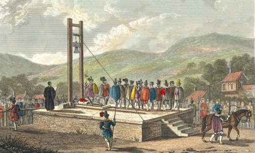
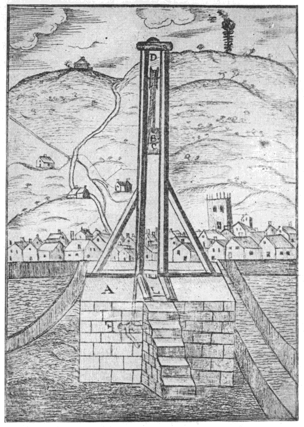

Halifax Gibbet
The Gibbet was first used in 1286 and remained a symbol of strict justice for centuries. It was designed to quickly and efficiently execute offenders caught stealing goods over a certain value.
The earliest recorded use of the Halifax Gibbet dates back to 1286 and continued in operation until the mid-17th century, with the last execution in 1650.
Halifax was a prominent cloth-producing town, and the device was introduced to protect its economic interests.
Under the “Halifax Law,” anyone caught stealing goods valued over 13 pence (about £5.80 today) could face execution by the Gibbet.
This strict law, enforced by the device, gave Halifax a reputation for harsh but effective justice.
The Gibbet was first used in 1286 and remained a symbol of strict justice for centuries. It was designed to quickly and efficiently execute offenders caught stealing goods over a certain value.

Halifax thrived as a center for cloth production. The Gibbet was employed to deter theft and maintain the town's economy.
Under the Halifax Law, thieves caught with goods exceeding 13 pence could be executed. The law's strict enforcement earned Halifax a reputation for uncompromising justice.

The Gibbet’s mechanism was simple but effective:
Executions were public events, often attracting large crowds.

The Gibbet’s blade weighed approximately 7 lb 12 oz (3.2 kg) and was attached to a block suspended by a rope. When released, it delivered a decisive blow to the neck.
The rope could be manipulated in different ways: in theft cases, it might be passed through the crowd or attached to the stolen property. In some instances, a horse was used to trigger the blade.
It is difficult to know exactly how many people were executed using the Halifax Gibbet. By 1650, public opinion considered beheading a disproportionately severe punishment for minor theft.
Oliver Cromwell, Lord Protector of England, subsequently forbade the use of the Gibbet, leading to its dismantling.
A timeline of important events for the Halifax Gibbet:
The "Gibbet Law" was introduced in Halifax, granting the Lord of the Manor the authority to execute thieves caught with stolen goods valued at 13d or more (£5–6 today).
The first recorded execution occurred in 1286, with John Dalton being beheaded.
A guillotine-like device, known as the Halifax Gibbet, was constructed to carry out executions. The device featured a heavy wooden block with an axe head, sliding between two upright posts, and was operated by releasing a pin or cutting a rope.
Between 1541 and 1650, 53 individuals were executed using the Halifax Gibbet. Executions typically took place on market days, serving as a public deterrent.
The final executions occurred in April 1650, when Anthony Mitchell and John Wilkinson were beheaded for stealing cloth and horses. Following public outcry over the severity of the punishment for petty theft, Oliver Cromwell prohibited the use of the gibbet.
The original stone platform supporting the gibbet was rediscovered, leading to preservation efforts.
A replica of the Halifax Gibbet was constructed near the original site, serving as a historical monument and educational exhibit.